O disjuntor é um dispositivo de proteção elétrica responsável por interromper automaticamente a corrente elétrica quando ocorre uma sobrecarga ou um curto-circuito. Sua principal função é proteger instalações, equipamentos e pessoas contra danos causados por falhas elétricas.
Aplicações:
- Quadros de distribuição elétrica. - Circuitos residenciais, comerciais e industriais. - Proteção de motores e equipamentos elétricos.
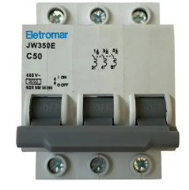
Vídeo explicativo:
Contator:
Conceito:
O contator é um dispositivo eletromecânico utilizado para ligar e desligar cargas elétricas de potência por meio de um comando elétrico. É amplamente empregado em sistemas de automação industrial.
Aplicações:
- Acionamento de motores elétricos. - Sistemas de iluminação industrial. - Comandos automáticos e painéis elétricos.
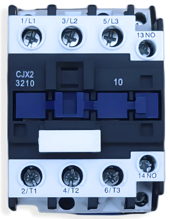
Botão de impulso ou Chave manopla:
Conceito (Botão de impulso):
O botão de impulso é um dispositivo de comando que mantém seus contatos acionados apenas enquanto estiver pressionado.
Aplicações:
- Comandos de partida e parada de máquinas. - Sistemas de automação. - Painéis de controle.
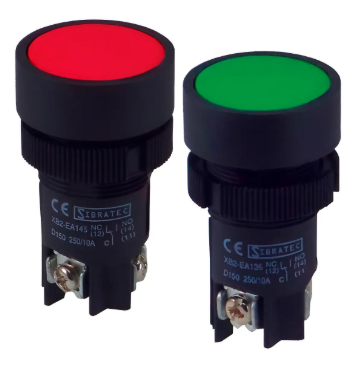
Conceito (Chave manopla):
É uma chave que permanece na posição selecionada após o acontecimento, sem necessidade de manter pressão manual.
Aplicações
- Seleção de modos de operação. - Liga/desliga de equipamentos. - Comandos de manutenção.
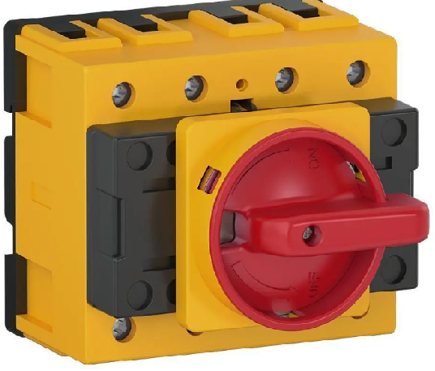
Sensor fim de curso:
Conceito:
O sensor fim de curso é um dispositivo utilizado para detectar a posição final ou limite de movimento de um equipamento mecânico.
- Alta eficiência. - Baixa manutenção. - Robustez e longa vida útil.
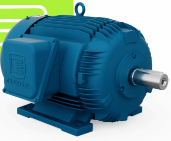
Multímetro:
Conceito:
Instrumento utilizado para medir grandezas elétricas.
Principais medições:
- Tensão (V). - Corrente (A). - Resistência (Ω). - Continuidade. - Frequência (em alguns modelos).
Aplicações:
- Manutenção elétrica. - Diagnóstico de falhas. - Testes em circuitos e equipamentos.
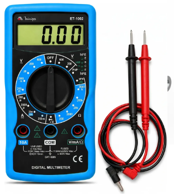
Relé temporizador:
Conceito:
Dispositivo que realiza uma ação após um tempo previamente ajustado.
Aplicações:
- Partida estrela-triângulo. - Automação industrial. Controle de iluminação. - Sequenciamento de máquinas.
Tipos comuns:
- Retardo na energização (ON delay). - Retardo na desenergização.
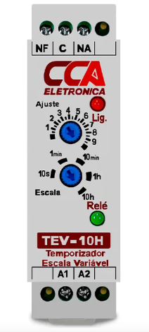
Disjuntor motor:
Conceito:
Dispositivo específico para proteção de motores elétricos, reunindo proteção contra sobrecarga e curto-circuito.
Aplicações:
- Acionamento direto de motores. - Painéis industriais.
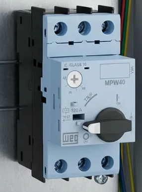
Relé térmico:
Conceito:
Dispositivo de proteção contra sobrecarga em motores elétricos.
Funcionamento:
Utiliza lâminas bimetálicas que se desformam com o aumento da temperatura causado por corrente excessiva.
Aplicações:
- Em conjunto com contatores. - Partidas diretas. - Partidas estrela-triângulo.
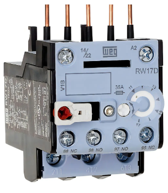
Explicação progamação e configuração do CLP/PLC:
CLPs:
Os CLPs (controladores lógicos progamáveis) são amplamente utilizados na automação industrial para controlar máquinas, processos e equipamentos. A progamação é geralmente realizada por meio da linguagem Ladder, que utiliza símbolos semelhantes aos esquemas elétricos tradicionais, facilitando o entendimento por técnicos e eletricistas.
O que é um CLP?
Um CLP é um dispositivo eletrônico progamável capaz de receber sinais de entrada, processar informações conforme a lógica programada e acionar saídas para controlar equipamentos como motores, válvulas, sensores e sistemas automatizados.
Programação em Ladder:
A linguagem Ladder representa a lógica de controle por meio de contatos e bobinas.
Contato NA/NO (normalmente aberto) O contato normalmente aberto permite a passagem do sinal apenas quando a entrada correspondente é acionada.
Exemplo:
|----[ I0.0 ]----------------( Q0.0 )----|
Neste exemplo:
- Ao pressionar o botão ligado à entrada I0.0, a saída Q0.0 é acionada. - Quando o botão é liberado, a saída retorna ao estado desligado.
Iniciando um programa no TIA Portal V20:
Abra o TIA Portal V20, em seguida clique em Create new project de um nome ao projeto e escolha a pasta onde deseja salvar e clique em Create.
Segundo passo: No lado esquerdo: Project view => Add new device, em seguida selecione Controller. Escolha a família da CPU que você está usando, por exemplo: S7-1200 S7-1500 E selecione o modelo exato da CPU e escolha a versão de firmware correspondente, em seguida clique em Add.
Programação e temporizadores no TIA Portal V20:
O TIA Portal V20 é um ambiente de programação utizado para configurar e programar controladores lógicos programáveis (CLPs) da Siemens. A programação permite definir como o CLP deve reagir os sinais recebidos pelas entradas e como deve controlar suas saídas.
Temporizadores:
Os temporizadores são utilizados quando é necessário controlar uma ação com base no tempo. No TIA Portal, existem diferentes tipos de temporizadores, entre eles o TON eo TOF.
TON - Atraso na ligação:
O TON (Timer On Delay) é um temporizador que cria um atraso antes de ligar sua saída. Por exemplo, podemos programar o temporizador para 5 segundos. Quando a entrada é ativada, o TON começa a contar. Após os 5 segundos, sua saída é ativada. O TON é utilizado quando precisamos que determinado equipameno seja ligado somente depois de um período de tempo.
TOF - Atraso no desligamento:
O TOF (Timer Off Delay) funciona de maneira diferente. Quando sua entrada está ligada, sua saída permanece ligada. Quando a entrada é desligada, o temporizador começa a contar o tempo programado antes de desligar a saída. O TOF pode ser utilizado, por exemplo, para manter um ventilador ligado durante alguns segundos depois que uma máquina for desligada.
Diferença entre TON e TOF:
A principal diferença entre os dois está no momento em que ocorre o atraso. - TON: Atrasa a ligação da saída. - TOF: Atrasa o desligamento da saída.
Contato Normalmente Aberto-NA/NO.
O contato NA (normalmente aberto) é utilizado quando umacondição precisa ser ativada para permitir a continuidade da lógica.
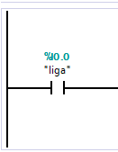
Representação no ladder:
Contato Normalmente Fechado-NF/NC.
O contato NF (Normalmente Fechado) é utilizado quando uma condição deve permanecer verdadeira enquanto determinado sinal não estiver acionado.
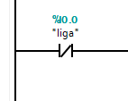
Representação no ladder:
Utilização de sensores:
Os sensores são dispositivos responsáveis por identificar determinadas situações em um processo.
Eles podem detectar, por exemplo:
- Presença de objetos.
- Movimento.
- Posição.
- Nível de líquidos.
- Temperatura.
- Proximidade.
- Passagem de produtos.
Quando um sensor identifica uma determinada condição, ele envia um sinal para uma entrada do CLP.
Aplicações da programação Ladder:
A programação Ladder pode ser utilizada em diversos sistemas de automação, como:
Esteiras transportadoras:
Sensores detectam produtos e enviam informações ao CLP. O programa controla o funcionamento do motor da esteira.
Reservatórios de água:
Sensores de nível informam ao CLP quando o nível está baixo ou alto. O sistema pode controlar automaticamente uma bomba.
Portas automáticas:
Sensores detectam a aproximação de pessoas ou objetos. O CLP recebe o sinal e controla o mecanismo de abertura e fechamento.
Sistemas de iluminação:
Sensores ou botões podem enviar sinais para o CLP, que controla o acionamento das lâmpadas.
Máquinas industriais:
O CLP pode controlar motores, cilindros pneumáticos, válvulas, sensores e outros equipamentos, seguindo uma sequência programada.